CS184/284A Fall 2026 Homework 3 Write-Up
Link to webpage: cs184.eecs.berkeley.edu/fa26
Link to GitHub repository: GitHub repository
Overview
In this homework, I implemented a path tracer that simulates how light interacts with objects in a 3D scene to produce realistic images. I learned a lot about light rays, ray-scene interaction, accelerating rendering using bounding-volume hierarchy, different types of illumination, and adaptive sampling.Part 1: Ray Generation and Scene Intersection
Ray generation: Points are sampled within each pixel and a ray is generated from the camera’s position. Then, the ray is transformed from camera space into world space and its direction normalized.
Once the ray is generated, I check if it intersects any objects in the scene using the ray-triangle intersection test. If there are multiple intersections, the closest one is kept by updating max_t to the nearest intersection.
Triangle intersection algorithm: I first calculate the triangle’s normal and then calculate where the ray intersects the plane, solving for parameter t. If the ray intersects the plane within the valid range, I move to determining if the intersection point is within the triangle using barycentric coordinates. If any weight is negatives, we know the point lies outside the triangle, so the intersection is not valid.

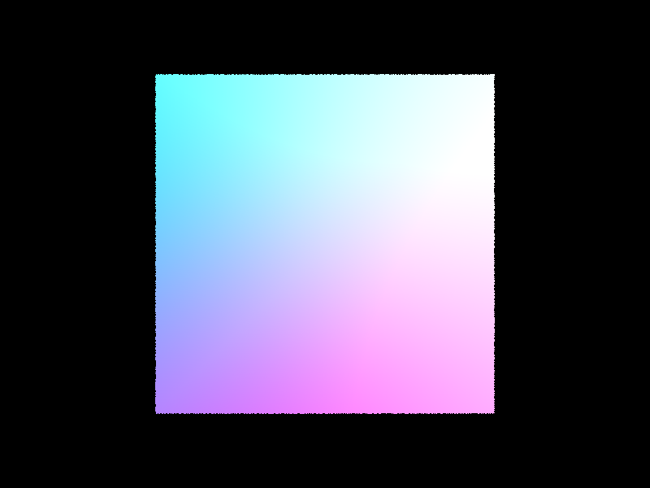
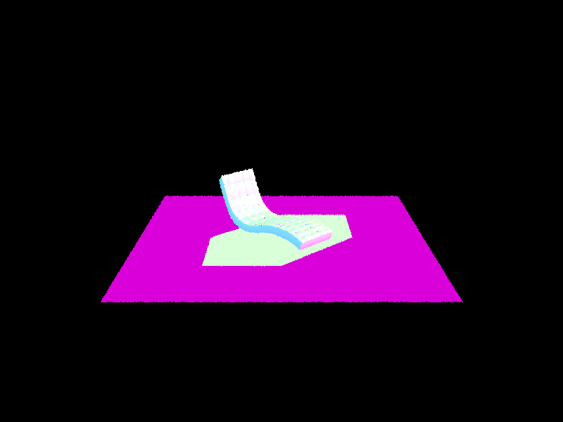
Part 2: Bounding Volume Hierarchy
BVH algorithm: To construct the BVH, at every step, I calculated the bounding box that contained all the primitives in the current set. If the number of primitives was small enough, they would go into a leaf node. Otherwise, the primitives were split into two groups and a BVH was recursively constructed for each group.
The splitting heuristic was at the median of the longest axis. I calculated the bounding box’s extent along the 3 axes and chose the one with the largest extent. Once the axis was chosen, the midpoint index of the range was calculated, placing about half of the primitives on each side.
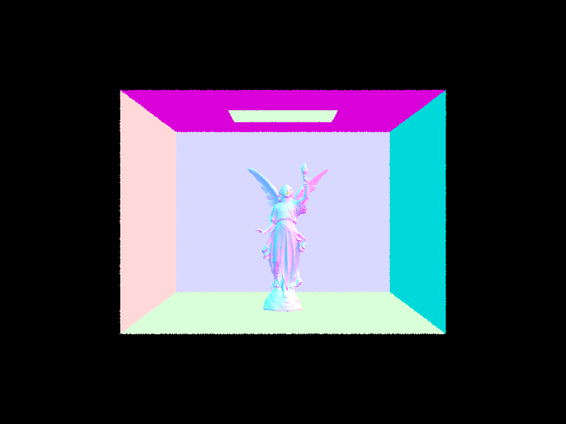
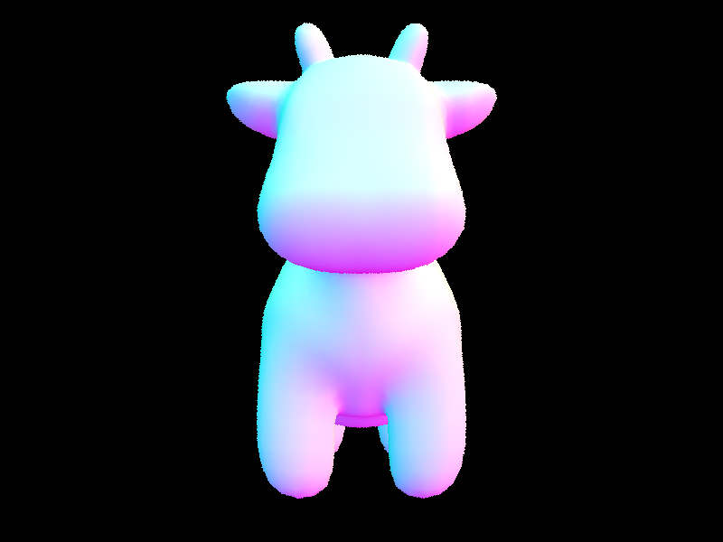
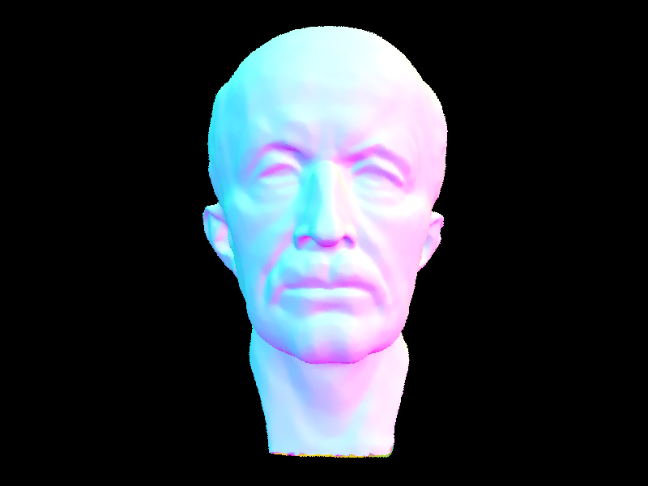
Renders of large .dae files with many triangles that are rapidly accelerated using BVH acceleration.
I compared rendering times before and after implementing BVH acceleration. For the cow, rendering time decreased from 21.1679 seconds to 0.0581 seconds. For Max Planck, it decreased from 289.2308 seconds to 0.0721 seconds, and for CBLucy, it decreased from 755.0940 seconds to 0.0593 seconds. These results demonstrate a significant improvement in rendering performance, especially for scenes with many triangles. By organizing primitives into a hierarchy of bounding boxes, the BVH allows the renderer to skip large portions of the scene during intersection tests instead of checking every primitive individually.
Part 3: Direct Illumination
In both sampling approaches, Monte Carlo integration is used to approximate the rendering equation. In uniform hemisphere sampling, a fixed number of random directions are generated, uniformly distributed across the hemisphere. Then, I check if each ray hits an object; if so, the amount of reflected light contribution is calculated and included in the final estimate. In importance sampling, I iterate over the scene’s actual light sources and sample directions directly from each source. If the light is not blocked from the target by another object, its reflected contribution is added to our estimate.
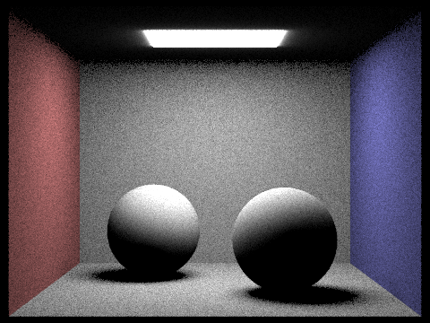
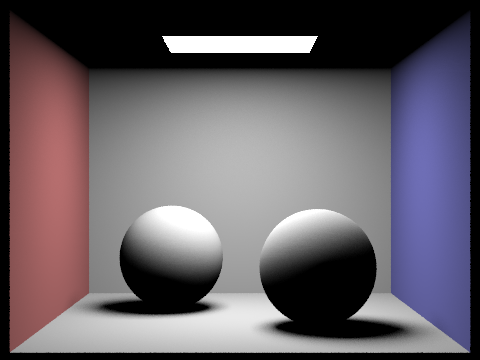
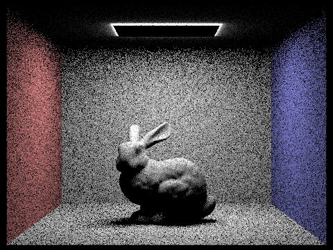
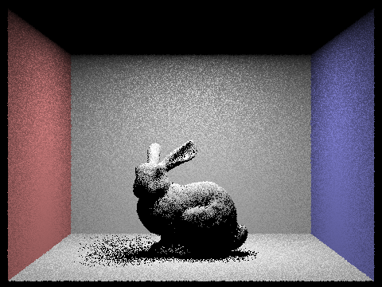
Uniform sampling results in noisier images because directions are randomly selected across the hemisphere. We can see that all of the objects look less smooth/more grainy. On the contrary, lighting/importance sampling directly samples points on light sources, so less noisy/smoother images are produced.
Part 4: Global Illumination
My implementation of indirect lighting uses recursive ray tracing to estimate multi-bounce light results. At each intersection, I sample a new direction using the surface’s BSDF and then determine the incoming radiance. I then add up the contributions of the bounces until the maximum ray depth is reached.
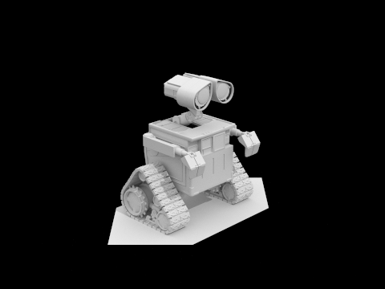
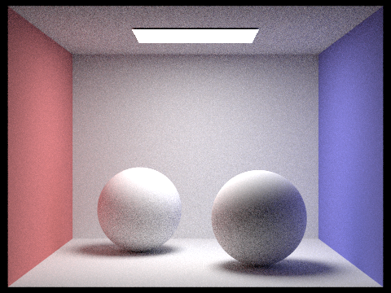
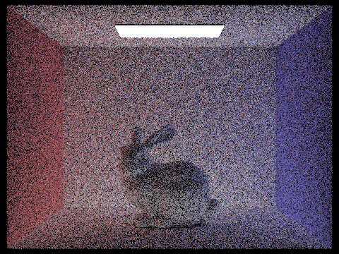
Unaccumulated Bounces
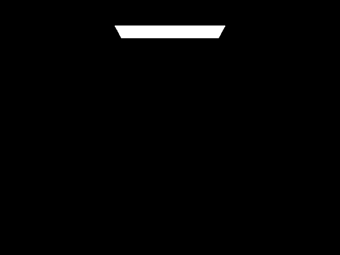
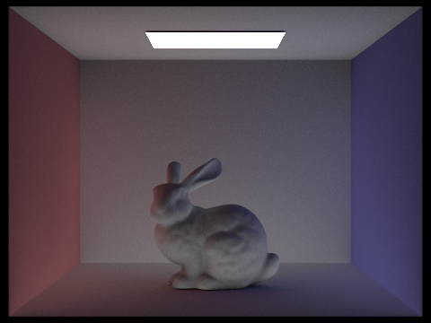
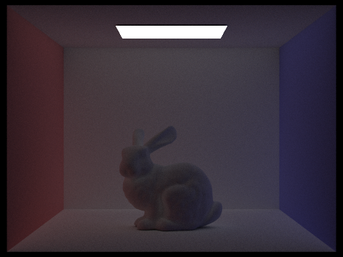
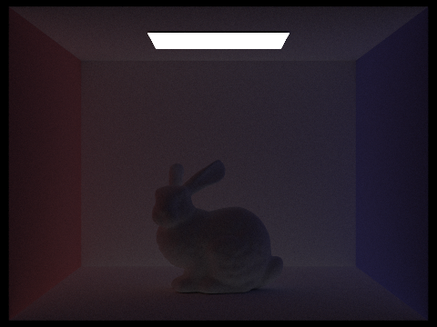
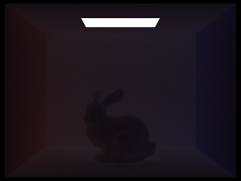
Accumulated Bounces
At depth 2, we see the results of the second bounce of light, where light bounces one more time than direct lighting. At depth 3, we are looking at light that has already bounced off two surfaces before reaching the camera, adding more indirect lighting. These extra bounces add realism to the images by introducing lighting past just the naive direct lighting that exists in our real life. Between accumulated and unaccumulated bounces, we can see that the unaccumulated bounces only consider the results of the deepest bounce, while the accumulated bounces add up the results of the bounces and consider previous bounces. As a result, the unaccumulated bounces get darker as the number of increases, while the accumulated bounces get brighter.
Russian Roulette
Russian Roulette rendering with max_ray_depth set to 0, 1, 2, 3, 4, and 100.
Sample Rate Comparison
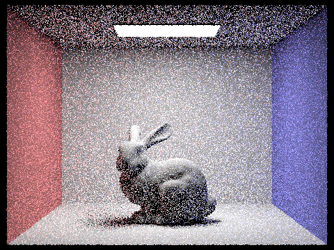
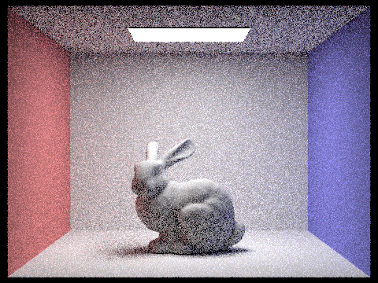
Rendered bunny with sample-per-pixel rates set to various values and 4 light rays.
Part 5: Adaptive Sampling
Adaptive sampling allows us to increase the number of samples per pixel without doing so uniformly, since some pixels converge faster with low sampling rates. In other words, the samples are concentrated in more difficult parts of the image. I implemented this generates samples in batches and tracks the sum and squared sum of illuminance values. After each batch, a 95% confidence interval is calculated for the pixel’s colors. If the interval is smaller than a specified tolerance, the pixel is converged and the sampling terminates early.
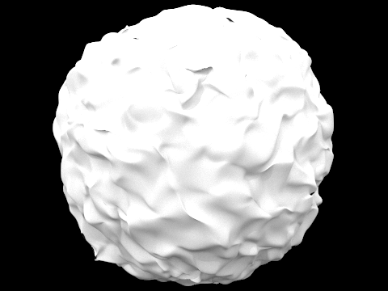
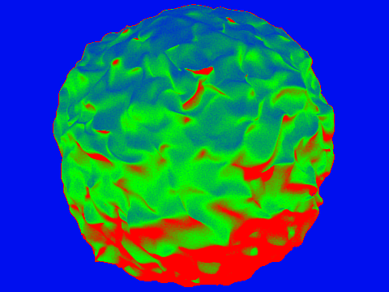
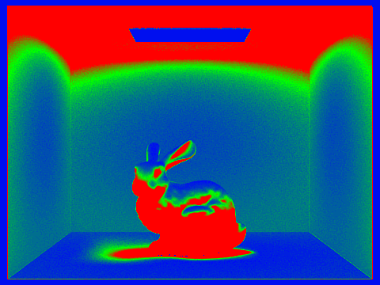
Noise-free rendered results and corresponding adaptive sampling rates.
AI use note: I used LLM's to coach me as I completed the code.